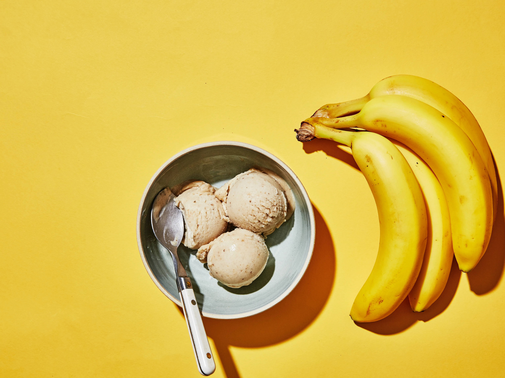

Banana Ice Cream

Description
This banana ice cream recipe creates a creamy and delicious frozen treat using just a few simple ingredients. It's dairy-free, vegan-friendly, and perfect for a refreshing dessert!
Ingredients
- 4 ripe bananas
- 2 tablespoons maple syrup (optional)
- 1 teaspoon vanilla extract
Steps
- Peel the bananas and slice them into coins.
- Place the banana slices in a single layer on a baking sheet lined with parchment paper.
- Freeze the banana slices for at least 2 hours, or until completely frozen.
- Once frozen, transfer the banana slices to a food processor or blender.
- Add the maple syrup (if using) and vanilla extract to the food processor or blender.
- Blend the banana slices until smooth and creamy, scraping down the sides as needed.
- Transfer the banana mixture to a freezer-safe container and freeze for an additional 1-2 hours to firm up.
- Scoop the banana ice cream into bowls or cones and serve immediately. Enjoy!